HamloProd · HPDG 0.1 BetaПервая бета на Kickstarter: цель $1 000
Как заполнить кампанию поле за полем, готовые тексты на английском и русском, туториал по плагину и все картинки. Тексты в серых рамках и блоки с кнопкой «Копировать» можно вставлять в Kickstarter как есть. Квадратные скобки [ ] — то, что нужно решить тебе.
ШАГ 0Три вещи, которые нужно решить до запуска
1. Страна создателя
Kickstarter принимает авторов только из 25 стран: США, Великобритания, Канада, Австралия, Новая Зеландия, Япония, Сингапур, Гонконг, Мексика, Норвегия, Швейцария и часть ЕС (Германия, Франция, Италия, Испания, Нидерланды, Польша, Швеция, Дания, Ирландия, Австрия, Бельгия, Греция, Люксембург, Словения). Решает страна документа и банковского счёта, а не где живёт аудитория. России и Кыргызстана в списке нет.
Варианты:
- запуск через человека или компанию из списка стран (партнёр с паспортом и счётом в этой стране — он формально создатель кампании);
- своя компания в США, например через Stripe Atlas (это налоги и расходы, нужна консультация бухгалтера);
- другая площадка: для русскоязычной аудитории — Boosty или Planeta.ru, для продажи беты по всему миру — предзаказ через Gumroad или itch.io.
2. Права на семплы в установщике
В библиотеке HPDG сейчас лежат звуки из коммерческих паков: Cymatics (808 в Trap), BoombapClassics, Sample Magic, Production Music Live, Ghosthack. Лицензии таких паков обычно разрешают использовать звуки в своей музыке, но не разрешают распространять их внутри другого продукта — сэмплера, плагина, библиотеки. Kickstarter-награда — это продажа, значит, это распространение.
- Либо получить письменное разрешение от каждого правообладателя.
- Либо заменить их своими звуками (HamloProd sample pack, свои записи) или звуками с явным разрешением на распространение в инструментах.
Это стоит заложить в план и бюджет кампании. Я не юрист — финальные условия смотри в лицензии каждого пака.
3. Бета сейчас бесплатна
В README и RIGHTS сказано, что бета работает без ключа активации. Если её можно скачать бесплатно, награда «доступ к бете» ничего не стоит. Нужно выбрать одно:
- бета становится эксклюзивом для бэкеров (нужен ключ активации или закрытая ссылка);
- бета остаётся бесплатной, а бэкеры получают лицензию на версию 1.0, ранний доступ к обновлениям и бонусы. Это честнее и проще — тексты ниже написаны под этот вариант.
ШАГ 1 · BASICSПоля кампании
Kickstarter → Start a project. Интерфейс на английском, поэтому названия полей даю как на сайте. Тексты для вставки — на английском: это основной язык площадки. Русскую версию описания можно добавить в конец Story.
Technology → Software. Раздел Music рассчитан на альбомы, концерты и клипы, а HPDG — программа.
49 символов. Запасной вариант: HPDG: Generate Drums and 808s From Your Own Samples
121 символ.
Город, откуда реально идёт работа. Может отличаться от страны верификации (см. шаг 0).
images/cover_1920x1080.png или images/cover_1024x576.png. Это картинка в выдаче, в соцсетях и превью.
build/demo_reel/HPDG_demo.mp4 (3:41). Кампании с видео собирают заметно чаще. Можно сократить до 1–2 минут: интро, Boom Bap, Sample Analysis, Drag в DAW.
$1 000 (или эквивалент в валюте страны запуска). Если цель не набрана, деньги не списываются ни с кого. Комиссия при успехе: 5% Kickstarter + примерно 3–5% платёжная обработка, на руки около $900–920.
30 дней. Kickstarter сам советует 30 дней или меньше: длинные кампании проседают в середине.
Вторник–четверг, утро по Нью-Йорку (EST). Заранее включи Pre-launch page: люди нажимают «Notify me on launch», и в первый день прилетает волна поддержки.
ШАГ 2 · REWARDSНаграды и как дойти до $1 000
Все награды цифровые, доставка без пересылки. Ориентир — примерно 50 бэкеров. Цены и лимиты — предложение, правь под себя.
| Цена | Название (EN) | Что получает бэкер | Лимит |
|---|---|---|---|
| $5 | Thank You | Имя в списке поддержавших (About / сайт), все апдейты кампании. | — |
| $19 | Early Bird License | Лицензия HPDG 1.0 + доступ к бета-апдейтам с первого дня. | 50 |
| $29 | Beta Backer License | То же, что Early Bird, когда ранние места закончатся. | — |
| $45 | Producer Pack | Лицензия + HamloProd Sample Pack 2 (лупы и one-shot'ы) + эксклюзивный скин для бэкеров. | — |
| $99 | Studio | 2 лицензии + Producer Pack + голос за следующий жанр + имя крупно в титрах. | 30 |
| $249 | Signature Kit | Всё из Studio + персональный кит: соберём набор звуков под твой стиль и добавим в HPDG. | 5 |
Пример, как набирается цель: 25 × $19 + 10 × $29 + 6 × $45 + 2 × $99 = $1 233. Запас на тех, кто отменит, и на комиссии.
Stretch goals — если соберём больше
- $1 500 — дополнительный кит для каждого жанра (свои звуки, без чужих лицензий).
- $2 500 — открываем жанры Drill и Rap: они уже есть в движке, их нужно довести до качества.
- $4 000 — сертификат подписи кода (Windows перестанет предупреждать при установке) и сайт с документацией.
Не обещай macOS, пока нет сборки и теста: невыполненная цель бьёт по репутации сильнее, чем её отсутствие.
Estimated delivery
Лицензии и бета: в течение 7 дней после окончания кампании. Версия 1.0: [укажи реальный срок, например «апрель 2027»].
ШАГ 3 · STORYОписание кампании
Вставляй в редактор Story по частям, между частями ставь картинки, указанные в квадратных скобках. Кнопка копирует выбранный язык.
ШАГ 4Risks & challenges и вопросы про AI
Use of AI
В форме Kickstarter спросят, используется ли AI. Отвечать нужно правдиво: нераскрытое использование AI может привести к приостановке проекта. Проверь сам, что соответствует действительности:
- Генерация битов. Если движок HPDG работает на правилах и вероятностях, а не на нейросети, обученной на чужих треках, так и напиши. Если стили калибровались по замерам референсных паттернов, честно укажи, какие источники использовались.
- Разработка. Если часть кода, видео или картинок сделана с помощью AI-ассистента, это стоит упомянуть.
ТУТОРИАЛКак пользоваться HPDG
Номера в тексте совпадают с номерами на картинках. Эти картинки и текст подходят и для Kickstarter (раздел Story или FAQ), и для документации к бете.
Установка
- Запусти
HPDG_VST3_Setup_0.1.0-beta.1.exe(Windows 10/11, 64-bit). Плагин встанет вC:\Program Files\Common Files\VST3вместе с библиотекой звуков. - Открой DAW и пересканируй плагины, если HPDG не появился сам.
- Добавь HPDG на дорожку как инструмент.
Окно плагина
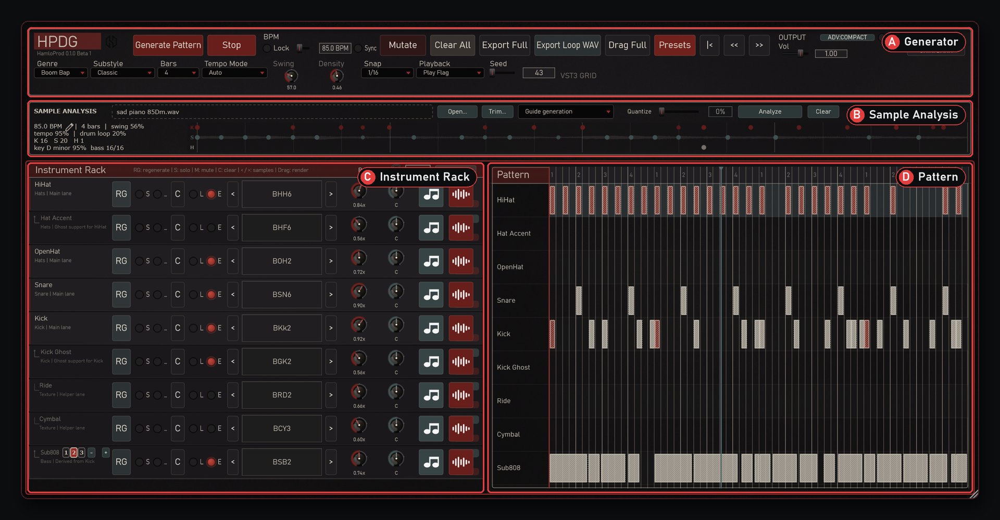
A. Генератор
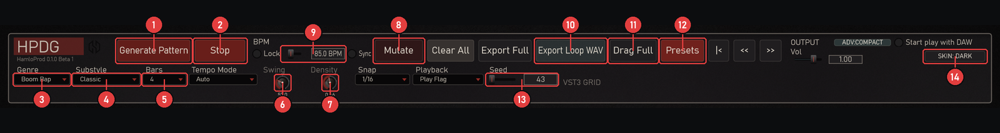
- 1Generate Pattern — новый бит в выбранном жанре и подстиле.
- 2Play / Stop — прослушивание. Пробел делает то же самое.
- 3Genre — Boom Bap, Trap, DnB, Techno.
- 4Substyle — подстиль жанра. Подстили меняй при остановленном воспроизведении.
- 5Bars — длина паттерна: 1, 2, 4, 8 или 16 тактов.
- 6Swing — от ровной сетки до ленивого запаздывания.
- 7Density — сколько ударов в паттерне.
- 8Mutate — небольшая вариация текущего бита.
- 9BPM — темп. Lock фиксирует его при генерации, Sync берёт темп из DAW.
- 10Export Loop WAV — сохранить весь луп в аудио. Кнопку можно сразу перетащить в DAW.
- 11Drag Full — перетащить весь паттерн в DAW как MIDI.
- 12Presets — сохранить и загрузить настройки целиком.
- 13Seed — номер генерации: тот же seed с теми же настройками даёт тот же бит.
- 14Skin — Dark, Steel или Sketch.
C. Дорожки
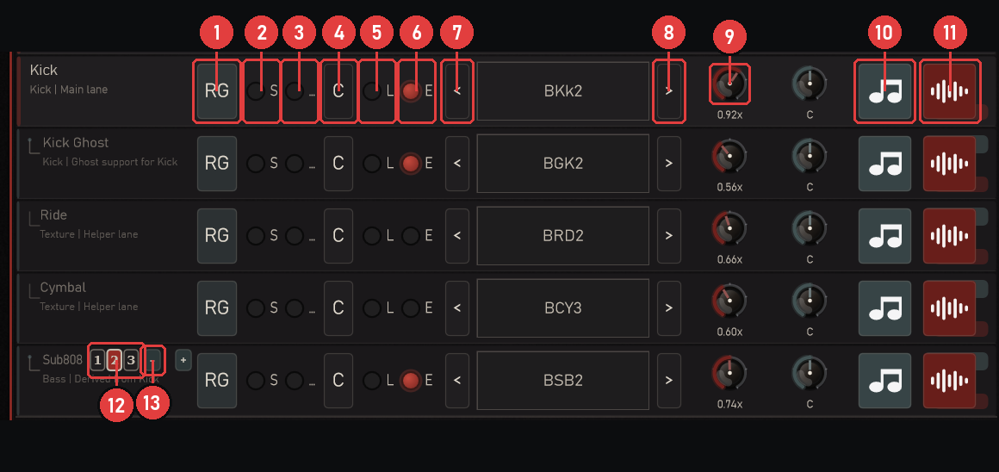
- 1RG — перегенерировать только эту дорожку.
- 2S — соло.
- 3M — заглушить.
- 4C — очистить дорожку.
- 5L — заблокировать: Generate и Mutate её не трогают.
- 6E — включить или выключить дорожку.
- 7< — предыдущий звук кита.
- 8> — следующий звук кита.
- 9Громкость дорожки.
- 10Drag (нота) — перетащить партию дорожки в DAW как MIDI.
- 11WAV (волна) — перетащить дорожку как аудио, со звуком и эффектами.
- 121 / 2 / 3 на Sub808 — сколько баса будет в следующей генерации: несколько длинных нот, больше или бас «всю дорогу».
- 13− / + на Sub808 — октава ниже или выше. С Shift — на полутон.
B. Анализ семпла — Guide generation
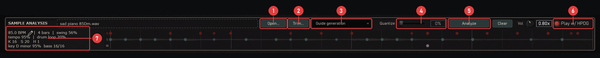
- 1Open… — выбрать файл. Или просто перетащи WAV, AIFF, FLAC или MP3 на панель.
- 2Trim… — выбрать кусок длинного файла. Файл длиннее 20 секунд открывает это окно сам.
- 3Режим: Guide generation — бит строится под семпл.
- 4Quantize — работает в режиме Copy break.
- 5Analyze — проанализировать заново.
- 6Play w/ HPDG — играть семпл вместе с паттерном.
- 7Результат: темп (карандаш — ввести вручную), такты, свинг, найденные удары K / S / H, тональность и басовые ноты.
После анализа жми Generate Pattern: бит будет в темпе семпла, а Sub808 сыграет в его тональности.
B. Анализ брейка — Copy break
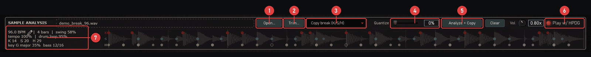
- Выбери режим Copy break (K/S/H) (3).
- Перетащи брейк на панель — удары появятся точками K / S / H и сразу скопируются в дорожки Kick, Snare и HiHat.
- Quantize (4) подтягивает удары к сетке: 0% — оригинальный грув, 100% — ровно по сетке.
- Play w/ HPDG (6) — сравнить оригинал и копию.
- Если нужно, выставь BPM паттерна под темп брейка (показан в зоне 7).
В DAW
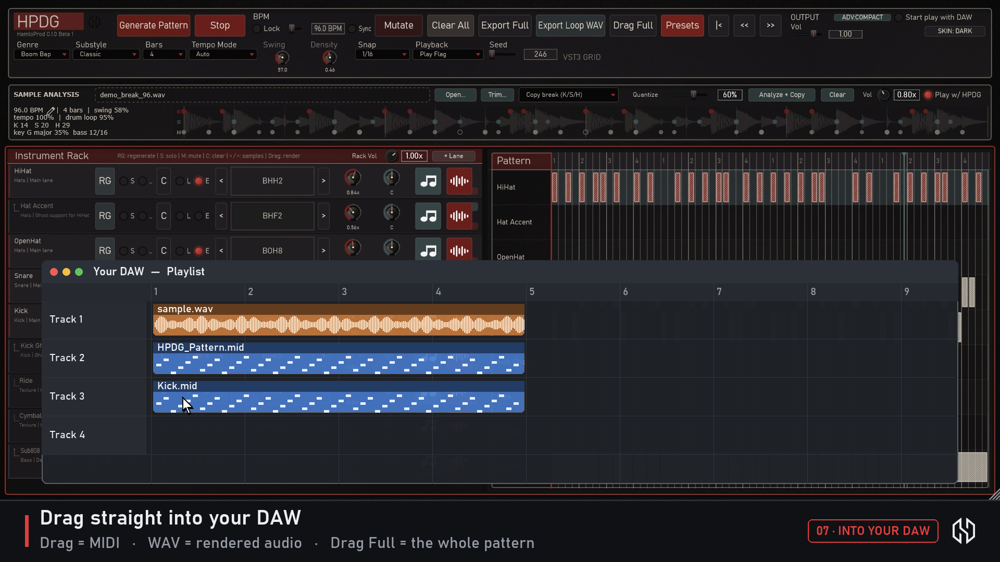
Зажми Drag Full или Drag / WAV на дорожке и тащи прямо на дорожку DAW. MIDI-партию можно отдать любому своему инструменту, WAV — это уже готовый звук.
Installing
- Run
HPDG_VST3_Setup_0.1.0-beta.1.exe(Windows 10/11, 64-bit). The plugin and its sound library go toC:\Program Files\Common Files\VST3. - Open your DAW and rescan plugins if HPDG doesn't show up.
- Load HPDG on a track as an instrument.
The window
A. Generator
- 1Generate Pattern — a new beat in the chosen genre and substyle.
- 2Play / Stop — listen. Space does the same.
- 3Genre — Boom Bap, Trap, DnB, Techno.
- 4Substyle — the style inside the genre. Change it while playback is stopped.
- 5Bars — pattern length: 1, 2, 4, 8 or 16 bars.
- 6Swing — from a straight grid to a lazy, late feel.
- 7Density — how busy the pattern is.
- 8Mutate — a small variation of the current beat.
- 9BPM — tempo. Lock keeps it when generating, Sync follows the DAW.
- 10Export Loop WAV — save the whole loop as audio. You can drag the button straight into the DAW.
- 11Drag Full — drag the whole pattern into the DAW as MIDI.
- 12Presets — save and load the full setup.
- 13Seed — the generation number: the same seed with the same settings gives the same beat.
- 14Skin — Dark, Steel or Sketch.
C. Lanes
- 1RG — regenerate just this lane.
- 2S — solo.
- 3M — mute.
- 4C — clear the lane.
- 5L — lock: Generate and Mutate leave it alone.
- 6E — turn the lane on or off.
- 7< — previous kit sound.
- 8> — next kit sound.
- 9Lane volume.
- 10Drag (note) — drag the lane into the DAW as MIDI.
- 11WAV (wave) — drag the lane as audio, with its sound and effects.
- 121 / 2 / 3 on Sub808 — how much bass the next generation writes: a few long notes, more, or a full line.
- 13− / + on Sub808 — bass an octave down or up. Hold Shift for a semitone.
B. Sample analysis — Guide generation
- 1Open… — pick a file, or just drop a WAV, AIFF, FLAC or MP3 on the panel.
- 2Trim… — pick a part of a long file. Files over 20 seconds open it automatically.
- 3Mode: Guide generation — the beat is built for the sample.
- 4Quantize — used in Copy break mode.
- 5Analyze — analyze again.
- 6Play w/ HPDG — play the sample together with the pattern.
- 7Results: tempo (pencil to type it), bars, swing, the K / S / H hits found, key and bass notes.
After the analysis press Generate Pattern: the beat follows the sample's tempo and the Sub808 plays in its key.
B. Break analysis — Copy break
- Choose Copy break (K/S/H) (3).
- Drop a break on the panel. The hits appear as K / S / H dots and are copied into the Kick, Snare and HiHat lanes.
- Quantize (4) pulls the hits to the grid: 0% keeps the original groove, 100% is right on the grid.
- Play w/ HPDG (6) compares the original and the copy.
- If needed, set the pattern BPM to the break's tempo (shown in area 7).
Into the DAW
Hold Drag Full, or Drag / WAV on a lane, and drag it onto a DAW track. MIDI works with any instrument you like; WAV is the finished sound.
ФАЙЛЫКартинки для кампании
Все файлы лежат в docs/kickstarter/images/. Пересобрать: python tools/kickstarter/make_images.py.
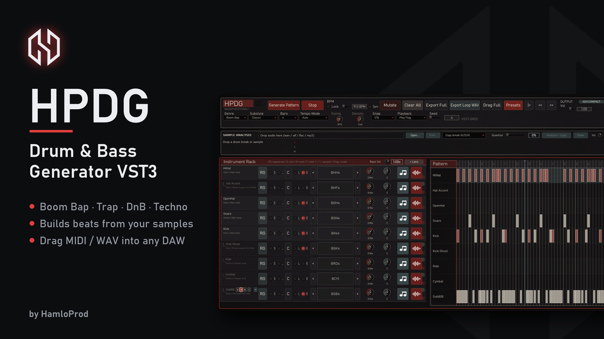
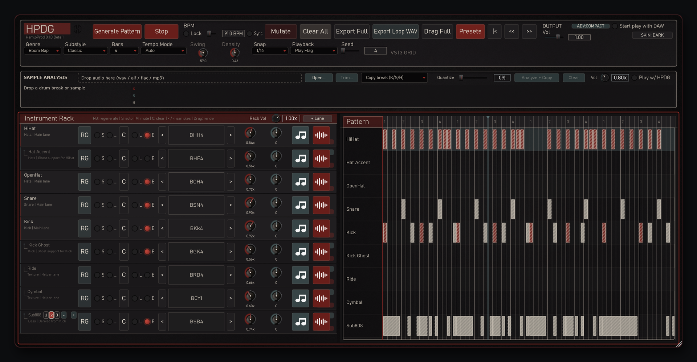
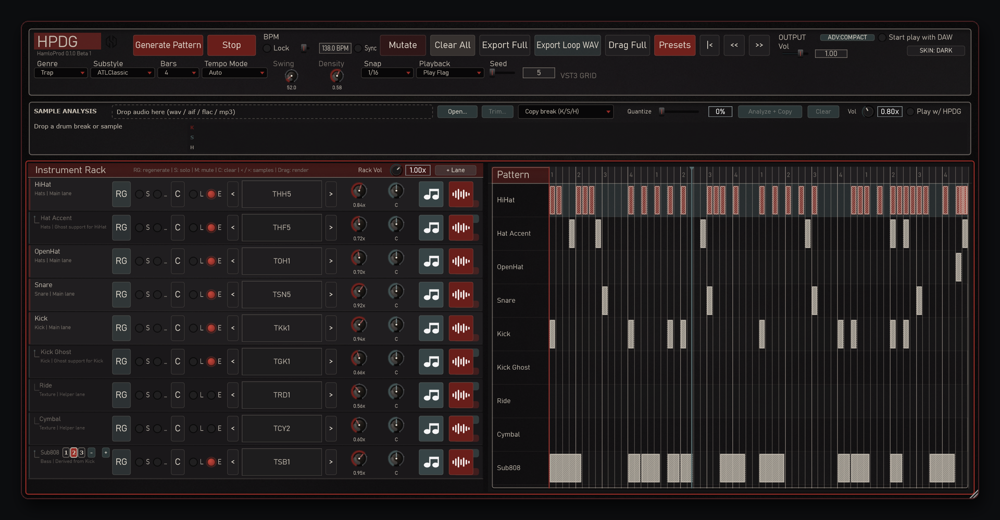
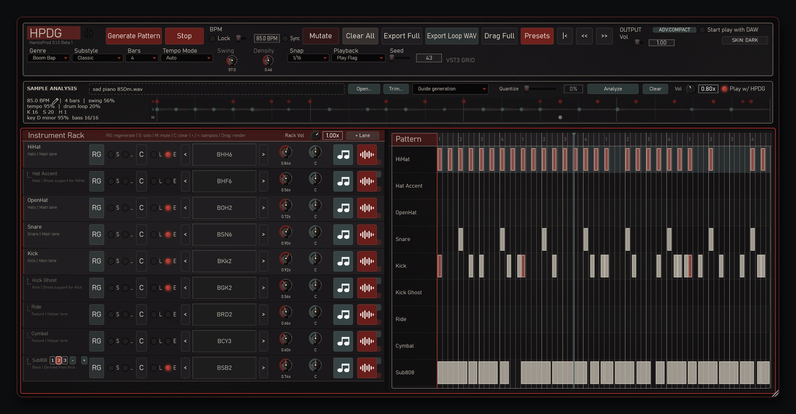
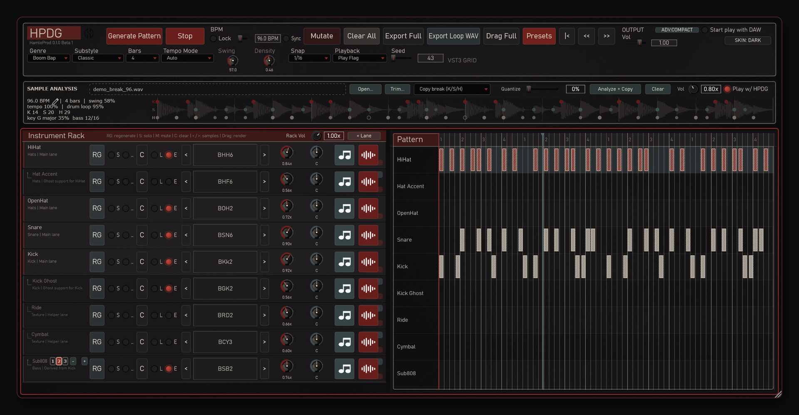
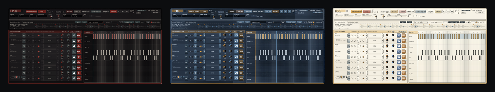
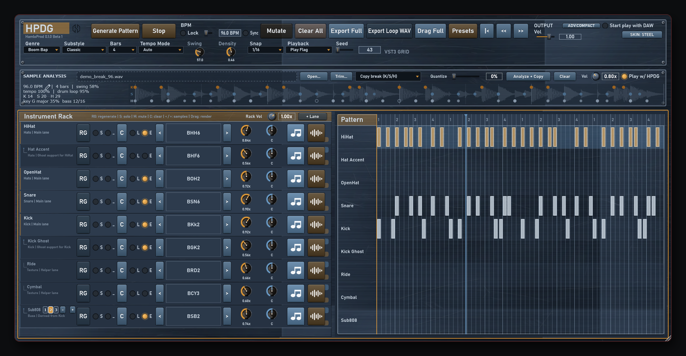
Совет: из видео можно нарезать короткие GIF (5–8 секунд) — Generate, Drop loop, Drag в DAW. В Story они работают лучше статичных картинок.
ФИНАЛЧек-лист перед кнопкой Launch
- Страна создателя и банковский счёт из списка Kickstarter.
- Решён вопрос с правами на семплы в установщике.
- Выбрана модель: бета бесплатна, бэкеры получают лицензию 1.0 и бонусы (или ключи для беты).
- Есть способ выдать лицензии: ключи, письмо со ссылкой или аккаунт.
- Заполнены Basics, Rewards, Story, Risks, AI-вопросы.
- Включена Pre-launch page, о ней рассказано в соцсетях и чатах битмейкеров.
- Видео загружено, обложка 16:9.
- Написан первый апдейт для бэкеров (выйдет в день запуска).
- Указан реальный срок версии 1.0.
Источники по правилам Kickstarter: кто может запускать, комиссии, политика AI, длительность. Правила меняются — перед запуском сверься с help center.